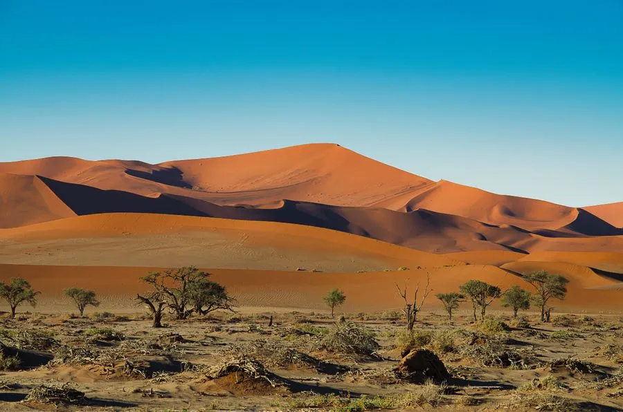
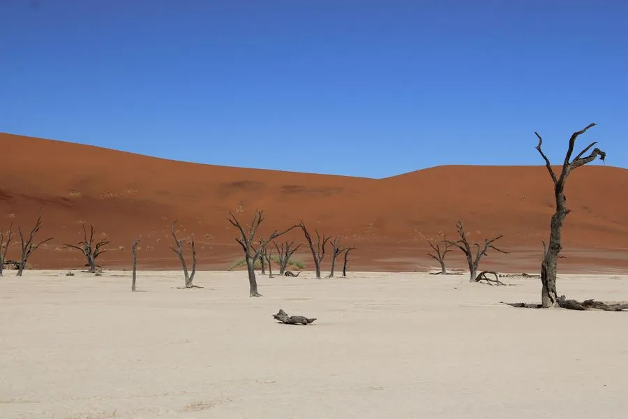
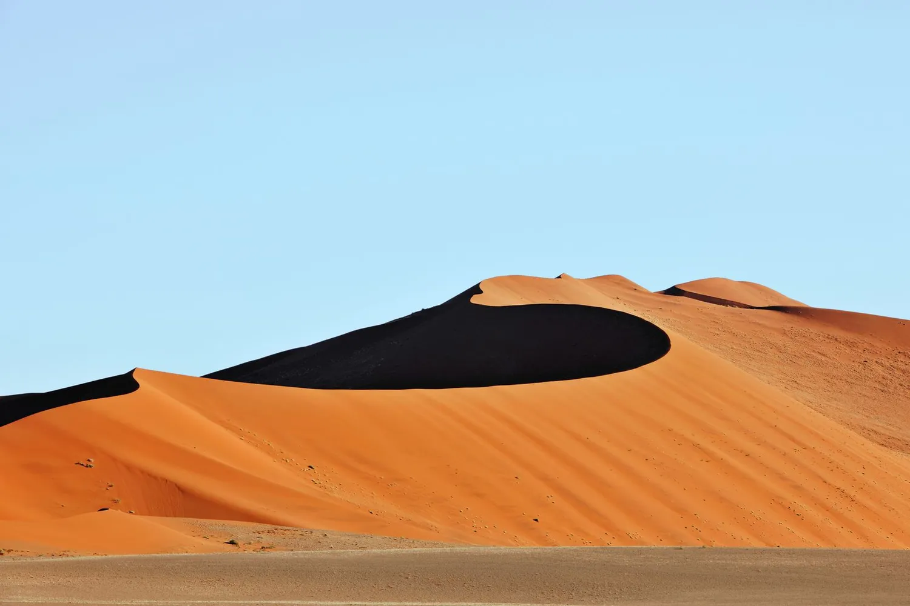

As dunas mais altas do planeta encontram um deserto onde árvores mortas ficam de pé há novecentos anos.
A Namíbia entrega paisagens que parecem geradas por computador: dunas alaranjadas de até trezentos e oitenta metros, panelas de sal rachadas e árvores petrificadas contra um céu absurdamente azul.
É um país feito para road trip de luxo, com distâncias enormes entre pontos turísticos e uma infraestrutura de lodges isolados que transforma o deserto vazio em experiência íntima e nunca em desconforto.
Chegar às dunas antes das seis da manhã significa vê-las mudarem de tom conforme o sol sobe, do vinho ao laranja vivo. Subimos a Duna 45 ou a Big Daddy, dependendo do fôlego do grupo, e descemos correndo pela areia solta, uma das brincadeiras mais celebradas de qualquer roteiro africano.
A poucos minutos de caminhada das dunas principais, uma antiga panela de argila abriga acácias mortas há mais de novecentos anos, preservadas pela aridez extrema. O contraste entre o branco do solo, o laranja das dunas ao fundo e o preto dos troncos é um dos cenários mais fotografados da África.
No litoral, onde o deserto encontra o Atlântico gelado, dezenas de navios naufragados enferrujam na areia, dando nome à costa mais inóspita do continente. Sobrevoamos de pequena aeronave para ver a escala real dessa fronteira entre dois mundos extremos.
No extremo norte, o povo himba mantém tradições seminômades e pintura corporal de ocre distintiva. Visitas conduzidas com respeito e por meio de guias locais permitem um contato genuíno, sem espetáculo, com uma das últimas culturas verdadeiramente tradicionais da África Austral.


